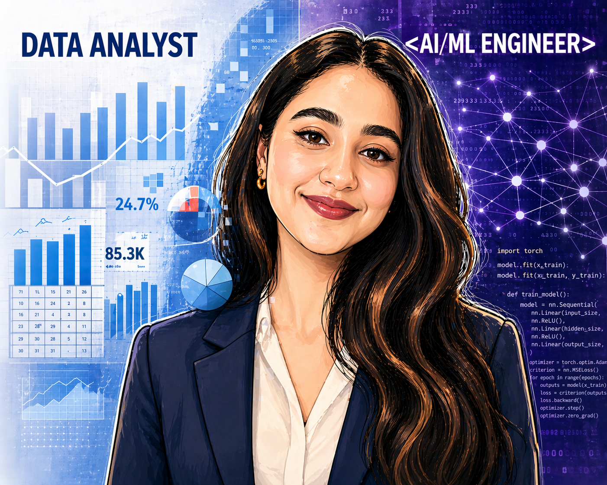

I'm passionate about building intelligent systems that go beyond theory, from emotion-aware NLP models and Transformer architectures built from scratch to AI-powered applications and data-driven dashboards. I enjoy solving complex problems with simple, practical solutions & I'm always exploring ways to make technology more meaningful and impactful. I love combining creativity with technical thinking to build things that are both impactful and practical. If you're interested in AI, software engineering, or building products that people genuinely use, we'll probably have a lot to talk about.
Los Angeles, CA
Master of Science in Computer & Information Science
Coursework: Computer Vision and Image Processing, Statistical Data Mining II, Deep Learning, Data Models Query Language, Intro to Pattern Recognition, Operating Systems, Machine Learning, Algorithms, Data Intensive Computing, Computer Security
August 2024 - December 2025
GPA: 3.70/4
Bachelor of Engineering in Information Science
Coursework: Artificial Intelligence, Data Mining, Database Management System, Object Oriented Programming in C++, Software Engineering, Linear Algebra, Data Structures, Statistics, Engineering Mathematics-I, II, III, IV
August 2019 - July 2023
GPA: 3.87/4
Email: sanjanaursk@gmail.com